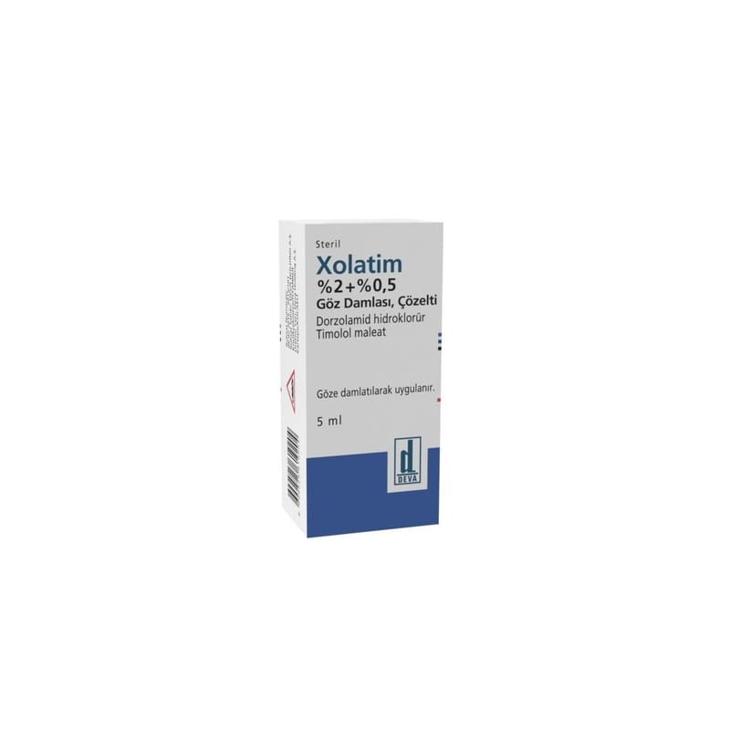

Xolatim %2+ %0,5 Göz Damlası, Çözelti ,5 ML,1 Şişe

Ne için kullanılır
KT · Bölüm 1XOLATİM dorzolamid hidroklorür ve timolol maleat etkin maddelerini içermektedir. Dorzolamid karbonik anhidraz inhibitörleri adlı bir ilaç grubunun üyesidir. Timolol beta-blokör ilaç grubunun bir üyesidir.
XOLATİM, tek başına beta blokör göz damlası yeterli olmadığında, glokom tedavisinde yükselmiş göz tansiyonunu düşürmek için reçetelenmiştir.
XOLATİM berrak ve renksiz bir çözeltidir. 5 ml’lik göz damlası; damlalıklı, opak, beyaz renkli, düşük yoğunluklu polietilen şişede; vidalı, sarı renkli kapaktan oluşan ambalaj içerisinde sunulmaktadır.